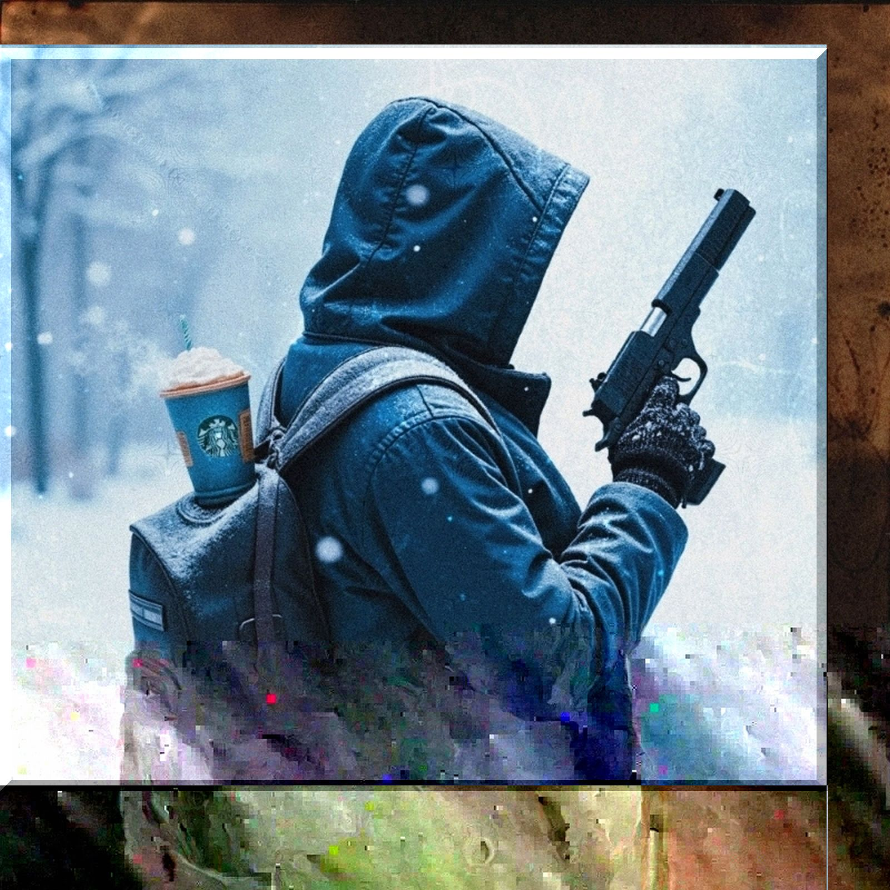

冬の弾丸
lyrics
思考停止でお悩み解決
さあスピードの向こう側へ
名前明かさず 甘え許さず
ポケットに手をいれ 吐く息は白く
雪が降り 外は白い世界
フードかぶって 耳を澄ます
特効薬を 探してます
まずは状況 見極めるべきです
冷静に見守るべきなんです
magic bullet 探してるんです
他責思考でスピード解決
さあお悩みの向こう側へ
diversityで 精神を操作
気がつきゃ切れてる 2枚目の白
雪が降り ここは白い世界
フードかぶって 狙いすます
特効薬なんて無いです
ブルーでベリーなフラペチーノです
気持ちを ごまかすだけなんです
magic bullet 打ち込むんです
magic bulletで全部壊滅
さあnextの向こう側へ
手口明かさず 騙すアイツの
袖の下にある 隙間が見える
雪が降り ここは白い世界
フードかぶって 狙いすます
特効薬 たぶん無いです
甘くて素敵な フラペチーノです
フェイクなディーパー 結構です
magic bullet あきらめるんです
そんなことより もう冬なんです
shoot a magic bullet into the magic bullet.
吐いた息が 白く見えてる
カッチャ
fire !!
notes
嘘をつくと鼻が伸びるピノキオのように、嘘をはくと息が白く見える世界だったら、みんな冬になったら嘘つきまくるよね。貧すれば鈍する。
負けがこんでくると一発逆転を狙ってしまいがちなんだけど、逆転ってのはねらったってなかなか起きない。大三元も国士無双もなかなか起きない。たった4人の世界ですら難しい。
もちろん大逆転の一手を狙う気持ちはわかる。でも特効薬ってないんですよ。それもなんでも全部に効いちゃうやつなんて。魔法の弾丸はケネディにではなく、その幻想にこそ打ち込むべきなのでは？甘すぎる嘘をすすってる場合か？そのフラペチーノってのはどこから出てきたんだい？
氷河期の冬は、恐竜だって絶滅しちゃったんだ。じゃあキリギリスはどうすればいいかって？冬になっても歌うしかできない、それなら撃ちまくるしか無いね。マシンガンでもなく散弾銃じゃない。ライフルで狙いすましてなおかつ撃ちまくるとかいいんじゃないかな。もしくは至近距離まで近づいて。
アリのようにコツコツ蓄えたって、春がいつ来るかわからないような冬がくれば、特攻役を探してしまうかもね。特効薬？特攻役？糸で操られてるうちは木の人形だ。まあピノキオは、忠告を聞かずに人間になれたんだ。痛い目にあいながら。
それにしても雪がふり積もる夜は静かで特別だよ。きっと、引き金を引いた音も吸い込まれてくんだ。
と、こんなこと書いておいて誤解されるのは嫌だからあらためて。暴力による解決なんてのは信じてもいない。ただ一方的に突きつける銃に対して、こっちは銃すらないのはどうなんだってハナシ。僕らに必要なのは魔法の弾丸じゃなくて、弾丸の魔法なのかも。それも一人一人が一発だけ並んで撃てるとかさ、…まるで魔法だね。